Формат, который нельзя располагать горизонтально – A4
Размер окружности указан неверно: 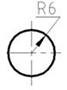
Правильно выполнена штриховка материала с большой площадью сечения:

110
Формат, который нельзя располагать горизонтально – A4
Размер окружности указан неверно: 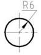
Правильно выполнена штриховка материала с большой площадью сечения:
120
Метод построения изображений изделий, заложенный в стандартах ЕСКД – прямоугольное проецирование.
Основные виды детали расположены …  правильно
правильно
Разрез, приведённый на фрагменте чертежа – 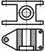 горизонтальный
Выполнение и оформление наложенного сечения 
Обозначение выносного элемента –  А (5:1)
А (5:1)
Приведённые упрощения использовать на чертежах деталей …  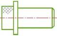 можно
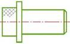 можно
130
Вид аксонометрической проекции детали, выполненной на чертеже –  прямоугольная изометрия
прямоугольная изометрия
Вид аксонометрической проекции, в которой выполнена окружность – … проекция.  прямоугольная диметрическая
прямоугольная диметрическая
Вид аксонометрической проекции, в которой изображена окружность - косоугольная фронтальная … проекция - 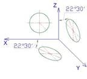 изометрическая
Вид аксонометрической проекции, оси которой представлены на чертеже – косоугольная горизонтальная … проекция.  изометрическая
изометрическая
Вид аксонометрической проекции детали, выполненной на чертеже –  фронтальная диметрия
фронтальная диметрия
При нанесении размеров в аксонометрии размерные линии проводят … измеряемому отрезку. параллельно
140
Соединение винтом с формой головки 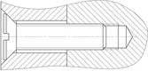 потайной конической и потайной
Шпилька номинальным диаметром 20 мм, длиной 45 мм, исполнение 1, выполненная по ГОСТ 22032-76 М20х45.58 ГОСТ 22032-76
Данное соединение выполнено … 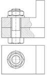 болтом
Наружный диаметр линии резьбы на стержне изображают линиями  : сплошными толстыми основными и сплошными основными
: сплошными толстыми основными и сплошными основными
Размер длины ввинчиваемого конца шпильки зависит от … детали. материала
Для преобразования вращательного движения в поступательное используют резьбы: трапецеидальные и ходовые и упорные
150
Основная надпись на рисунке принадлежит  рабочему чертежу детали
рабочему чертежу детали
Шероховатость резьбовой поверхности на чертеже Ra …  3,2
3,2
На фрагменте чертежа допущены ошибки при выполнении …  простановки размеров
простановки размеров
Способ изготовления. Деталь выполнена …  точением
точением
На данном чертеже при простановке размеров используются правила: соединять размерной линией 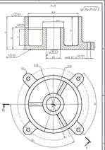 : необработанную поверхность с необработанной и обработанную поверхность с обработанной и обработанную поверхность с необработанной один раз на каждую ось
Над основной надписью располагается текст, называемый … 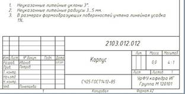 технические требования
160
При совмещении сборочного чертежа со спецификацией на формате А4 в ней отсутствует раздел – Документация
Сварное соединение – комплекс деталей, соединяемых с помощью … шва: сварного
В соединениях, получаемых пайкой и склеиванием, место соединяемых элементов следует изображать сплошной линией толщиной: S
Крайние и промежуточные положения подвижной части сборочного узла изображаются по контуру линией: штрих-пунктирной с двумя точками
На сборочном чертеже проставляют размеры: справочные и присоединительные и установочные и габаритные
На сборочных чертежах в продольных разрезах показываются нерассеченными: гайки и(или) шайбы
За основные плоскости проекций при выполнении изображений принимают шесть граней куба
Название шва, изображенного на рисунке 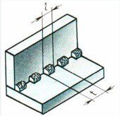 – шов угловой
При продольном разрезе показывают нерассеченными: шарики, такие детали, как винты, заклепки, непустотелые валы, рукоятки и т.п. при продольном разрезе показываются нерассеченными.
На сборочном чертеже линии – выноски и полка выполняются: сплошными тонкими
… – соединения деталей, на одной из которых нарезана наружная, а на другой внутренняя: резьбовые
Изображение отдельного ограниченного места поверхности предмета называется местным видом
Условное изображение соединения деталей 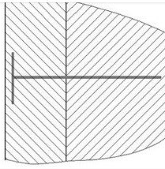 винтом
Изображение дает наиболее полное представление о форме и размерах предмета – вид спереди
Главный вид детали 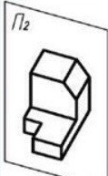 - 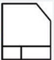
Местным называют вид – на котором изображены отдельным, ограниченные места поверхности объекта
Фрагмент чертежа содержит ошибку  - обозначение (?)лишнего(?)
- обозначение (?)лишнего(?)
Расчетная длина шпильки (используется в обозначении) 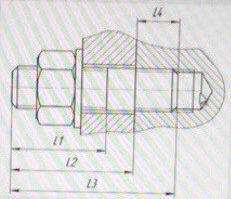 - L2
Вид сверху не обозначается, если он расположен – снизу от главного вида
Тип линии, изображающий внутренний диаметр отверстии 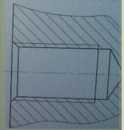 сплошная тонкая
Приведенный разрез выполнен … секущими плоскостями 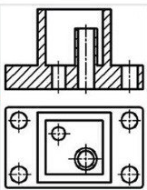 - двумя
Замена вида слева на местный вид … 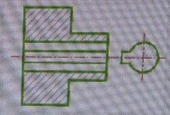 - возможно
К основным видам относится …, согласно ГОСТ 2.305-2008 – вид снизу
В разрезах и сечениях изделия из металла штрихуются под углом 45 градусов
Обозначение сварного шва, выполняемого при монтаже изделия: 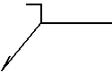
Размеры на чертежах указываются в миллиметрах
Размеры, не подлежащие выполнению по данному чертежу и указанные для большего удобства – справочными
Название шва, изображенного на рисунке 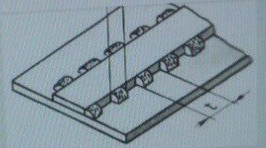 - тавровый
Спицы маховиков, шкивов, тонкие стенки типа ребер жесткости и т.п. показывают незаштрихованными, если секущая плоскость проходит вдоль оси или длинной стороны такого элемента.
Чертеж детали – конструкторский документ, содержащий изображение детали и другие данные, необходимые для ее изготовления и контроля (размеры, шероховатость поверхностей, технические требования по изготовлению и контролю, материал детали и т.д.).
ГОСТЫ ({} – простое перечисление, [пояснение] )
Сталь углеродистая Ст{1,3,5,6} ГОСТ 380-94
Сталь конструкционная Сталь{10,20,30,40} ГОСТ 1050-94
Сплав алюминиевый Д{1,16,18} ГОСТ 15527-2004
Латуни, обрабатываемые давлением Л{63,68,70} ГОСТ 15527-2004
Шпилька М[ДИАМЕТР]х[ДЛИНА].[КЛАСС ПРОЧНОСТИ БЕЗ ДЕСЯТИЧНОЙ ЗАПЯТОЙ] ГОСТ 22032-76
ГОСТ 2.723–68 – Катушка, трансформаторы напряжения/тока
ГОСТ 2.727–68 – Предохранитель плавкий
ГОСТ 2.728–74 – Резистор постоянный, конденсатор
ГОСТ 2.730–73 – Диод, транзистор
ГОСТ 2.741–68 – Громкоговоритель